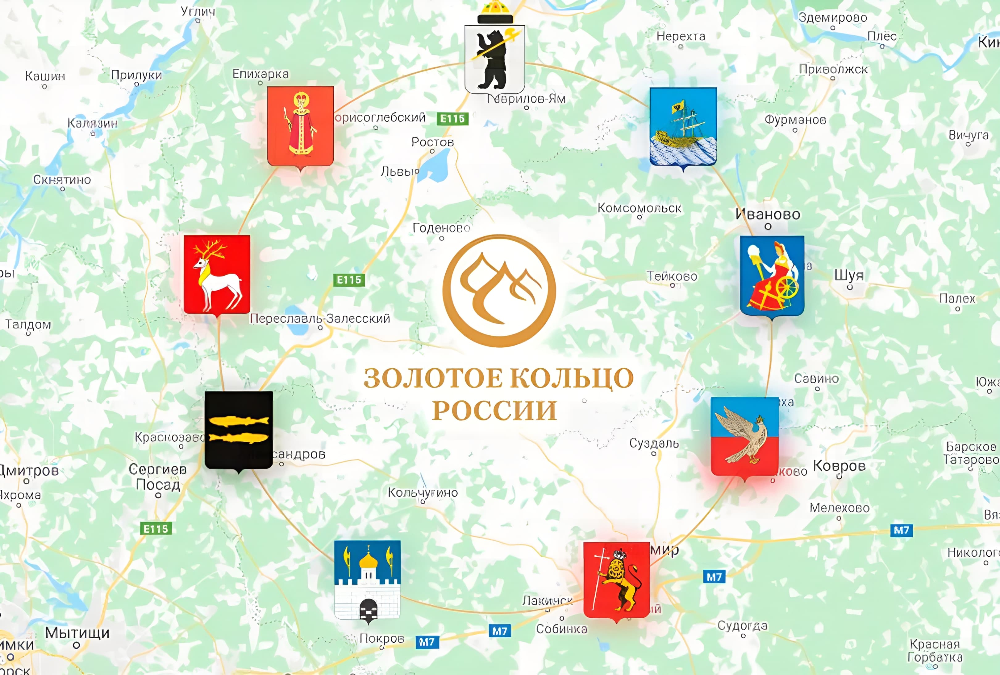
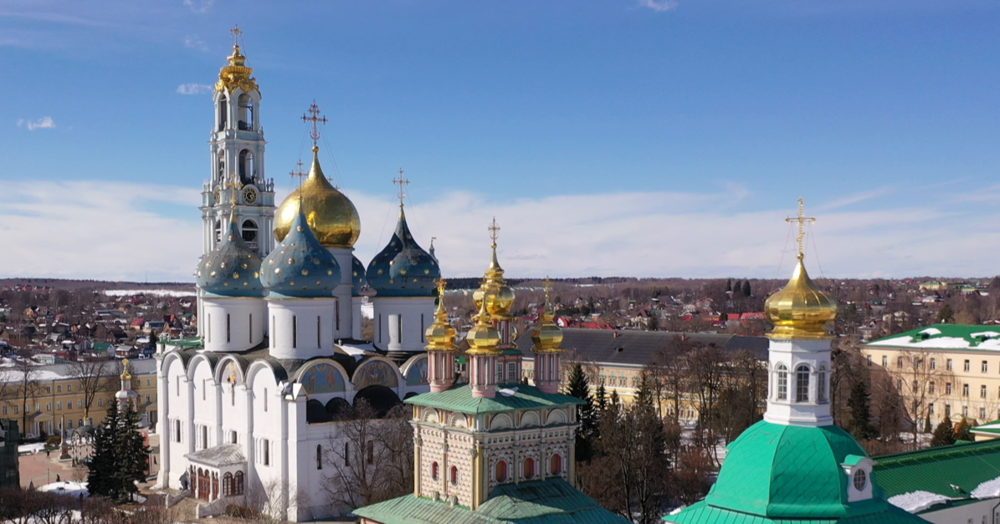
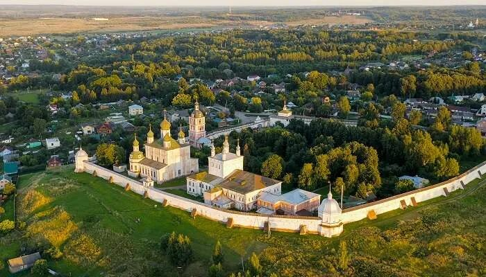
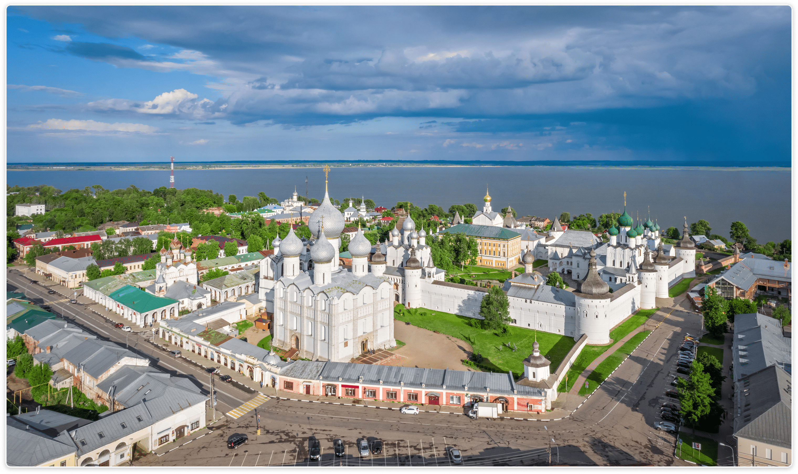
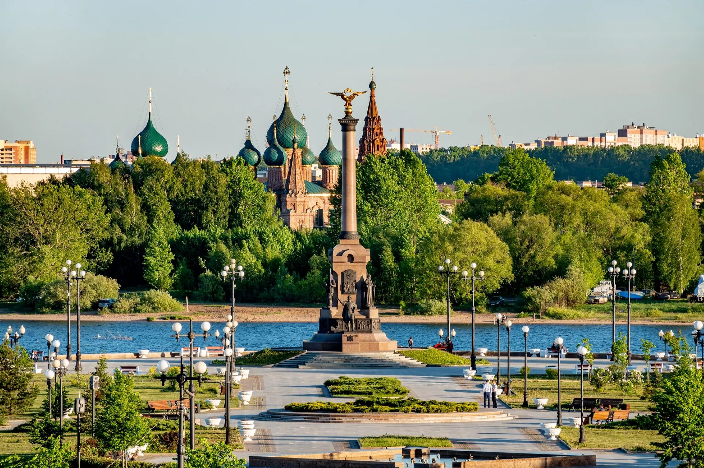
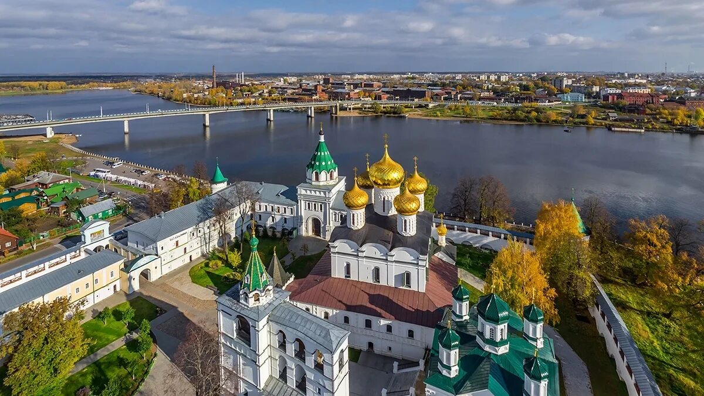
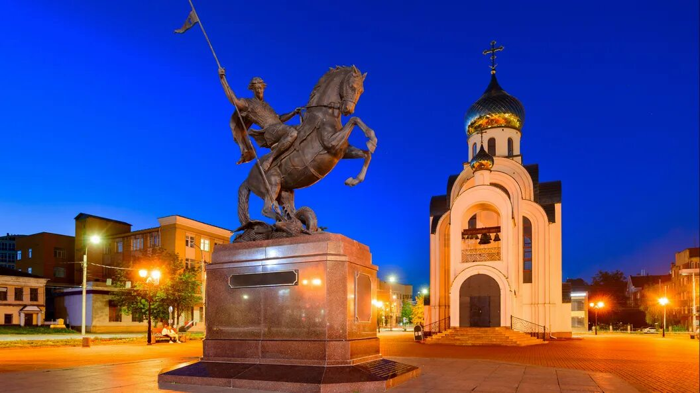
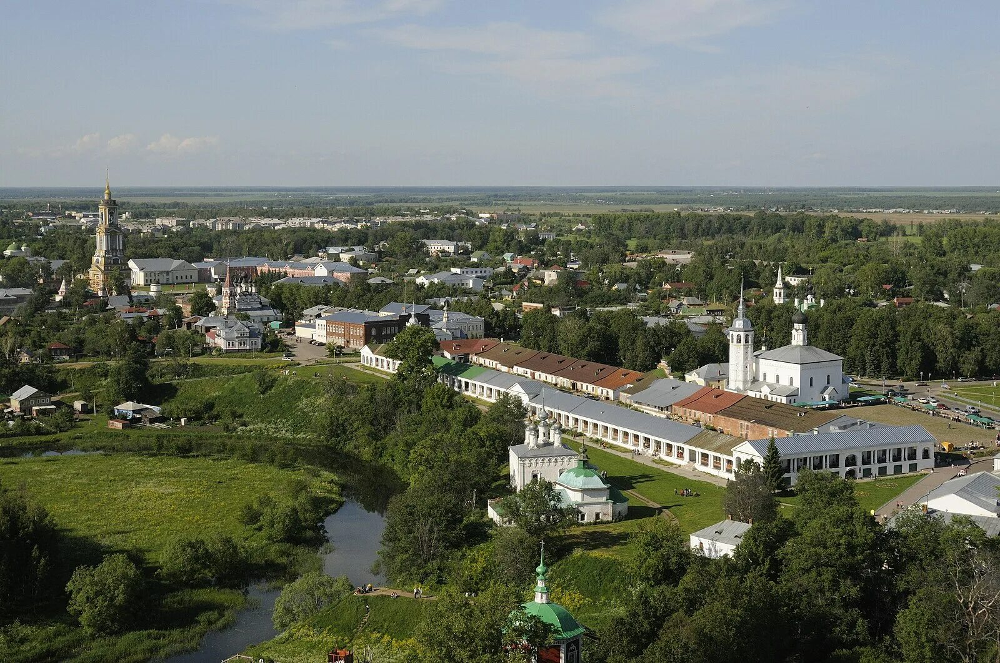
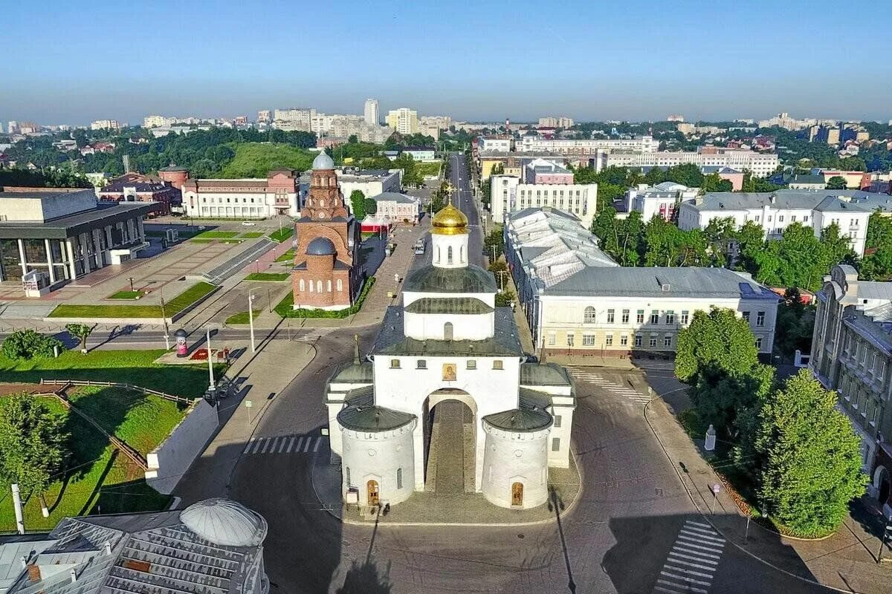
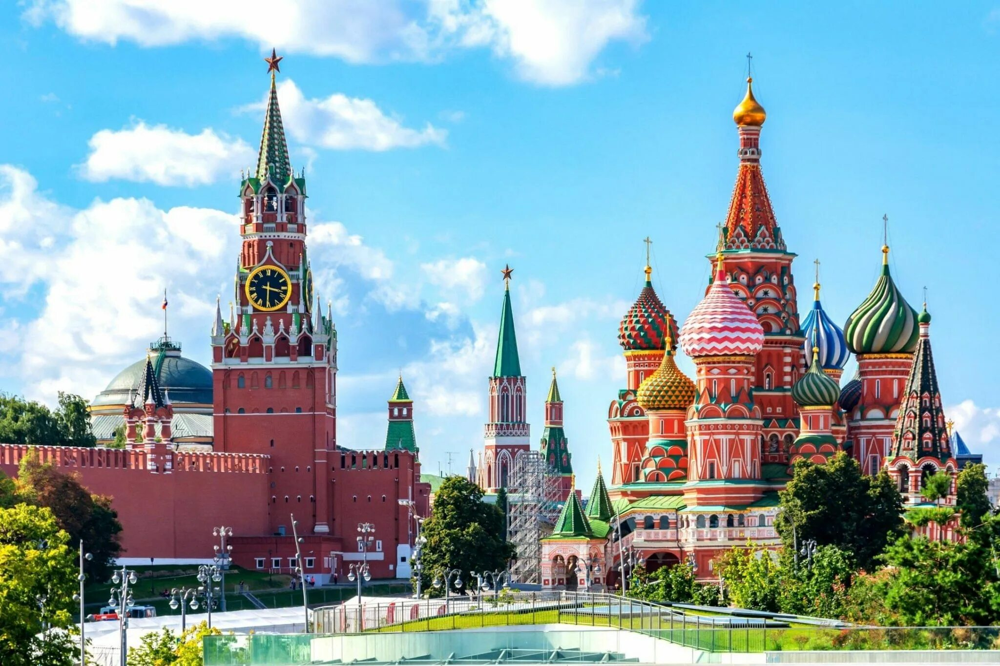

Что такое Золотое кольцо России?
Золотое кольцо России - туристический маршрут, проходящий по древним городам Северо-Восточной Руси, в которых сохранились уникальные памятники истории и культуры России, центры народных ремёсел. Маршрут образует кольцо к северо-востоку от Москвы.
Автор термина и идеи кольцевого маршрута — журналист и литератор Юрий Бычков. В 1967 году в газете «Советская культура» была опубликована серия очерков о древнерусских городах под общей рубрикой «Золотое кольцо». Позднее это название было присвоено туристическому маршруту.
Название маршрута появилось, когда Бычков увидел золотые купола одного из храмов, гуляя по Москве.
Основные города классического Золотого кольца: Сергиев Посад, Переславль-Залесский, Ростов Великий, Ярославль, Кострома, Иваново, Суздаль и Владимир. Каждый из них имеет свою уникальную историю, архитектурные шедевры и культурные традиции.
Города Золотого кольца

Сергиев Посад
Сергиев Посад — город в Московской области России, административный центр Сергиево-Посадского городского округа. Входит в туристический маршрут «Золотое кольцо России».

Переславль-Залесский
Переславль-Залесский (часто просто Переславль) — город в Ярославской области России, административный центр Переславского района. Входит в туристический маршрут «Золотое кольцо России».

Ростов Великий
Ростов Великий (до 2025 года — Ростов) — город в России, административный центр Ростовского района Ярославской области. Входит в список исторических городов России.

Ярославль
Ярославль — один из крупнейших городов в европейской части России, с многовековой историей и удивительным культурным наследием. Столица Золотого кольца.

Кострома
Кострома — город в России на реке Волге, административный центр Костромской области. Центр ювелирного промысла и сыроделия. Входит в список исторических городов России.

Иваново
Иваново (в 1871–1932 годах — Иваново-Вознесенск) — город в России, административный центр Ивановской области, образует городской округ Иваново. Входит в список исторических городов России.

Суздаль
Суздаль — город-заповедник во Владимирской области России, административный центр Суздальского района. Входит в список исторических городов России.

Владимир
Владимир — город в России, административный центр Владимирской области и городского округа город Владимир. Один из древнейших русских городов. Входит в список исторических городов России.

Москва
Москва — столица России, город федерального значения, административный центр Центрального федерального округа и центр Московской области, в состав которой не входит. Входит в список исторических городов России.